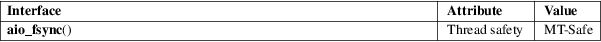

aio_fsync − asynchronous file synchronization
Real-time library (librt, −lrt)
#include <aio.h>
int aio_fsync(int op, struct aiocb *aiocbp);
The aio_fsync() function does a sync on all outstanding asynchronous I/O operations associated with aiocbp−>aio_fildes. (See aio(7) for a description of the aiocb structure.)
More precisely, if op is O_SYNC, then all currently queued I/O operations shall be completed as if by a call of fsync(2), and if op is O_DSYNC, this call is the asynchronous analog of fdatasync(2).
Note that this is a request only; it does not wait for I/O completion.
Apart from aio_fildes, the only field in the structure pointed to by aiocbp that is used by this call is the aio_sigevent field (a sigevent structure, described in sigevent(7)), which indicates the desired type of asynchronous notification at completion. All other fields are ignored.
On success (the sync request was successfully queued) this function returns 0. On error, −1 is returned, and errno is set to indicate the error.
|
EAGAIN |
Out of resources. | ||
|
EBADF |
aio_fildes is not a valid file descriptor open for writing. | ||
|
EINVAL |
Synchronized I/O is not supported for this file, or op is not O_SYNC or O_DSYNC. | ||
|
ENOSYS |
aio_fsync() is not implemented. |
For an explanation of the terms used in this section, see attributes(7).

POSIX.1-2008.
glibc 2.1. POSIX.1-2001.
aio_cancel(3), aio_error(3), aio_read(3), aio_return(3), aio_suspend(3), aio_write(3), lio_listio(3), aio(7), sigevent(7)